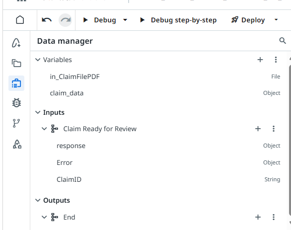

Start Event
With the process imported, tested, and published, the next job is to make it actually start on its own — the moment a new claim shows up — and to give it the variables it needs to carry claim data through the flow. That's an event trigger registered against the process, plus a couple of process-level variables and an input argument set up in the Data manager.
Create the trigger
From your automation's Triggers → Event Triggers page, click Add Event Trigger. Under General details, set Select connector to UiPath Data Fabric, choose your Connection (for example, the Shared Data Fabric Connection [default]), and set Event to Record Created — the same "new claim record" signal used throughout this workshop.
![Add Event Trigger wizard: Select connector UiPath Data Fabric, Connection Shared Data Fabric Connection [default], Event Record Created, Entity Scope dropdown showing Folder and Tenant options](assets/start_event_trigger_wizard.png)
Under Entity Scope, choose how broadly the trigger can see entities: Folder scopes it to entities available in this workspace folder, while Tenant makes entities configured at the tenant level selectable too. For this workshop, select Tenant so the trigger can see the shared Data Fabric entity the workshop uses. Click Next to move to Event details, where you'll pick the specific entity (for example, IntakeClaimEntity) and any filter conditions, then click Add to save the trigger.
Create the variables and input argument
Open the Data manager panel from the left-hand rail. This is where the process's own working data lives — variables that persist across the whole flow, plus the inputs and outputs each start/end event exposes.

Under Variables, add two: in_ClaimFilePDF as a File variable to hold the downloaded supporting document, and claim_data as an Object variable to hold the claim record once it's read from Data Fabric. Under Inputs for the Claim Ready for Review start event, add one input argument — ClaimID, of type String — so the trigger can pass in which claim record just changed.
- in_ClaimFilePDF (File) — the claim's supporting document, downloaded from the Data Fabric record.
- claim_data (Object) — the full claim record, read once and reused by later steps instead of re-querying Data Fabric.
- ClaimID (String, input argument) — passed in by the event trigger, identifying which claim record fired the start event.
in_ClaimFilePDF, claim_data, ClaimID — saves you from having to rename references throughout the rest of the flow as you wire up the Fraud Detection Agent, document download, and email steps.